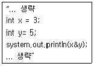
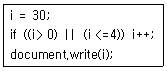
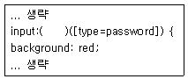
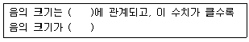

멀티미디어콘텐츠제작전문가(구) (2014-05-25 기출문제)
1과목: 멀티미디어개론
1. UNIX 환경에서 할 수 있는 계정 보안 방법으로 거리가 먼 것은?
- root 계정은 /etc/security 설정 파일을 통해 접속 제한
- PAM 모듈을 이용 특정사용자, 그룹, 특정 시간대에 로그인 설정
- 스니핑을 방지하기 위해 서브 네트워크를 나누고 각각 스위칭 허브로 연결
- 사용자 패스워드의 은닉을 위해 shadow 패스워드를 사용
(정답률: 50%)

2. 포트번호가 443이며, 넷스케이프사에서 개발한 보안 프로토콜은?
- IPsec(Internet Protocol Security)
- SSL(Secure Socket Layer)
- RDP(Remote Desktop Protocol)
- L2TP(Layer 2 Tunneling Protocol)
(정답률: 89%)
3. 디지털 네트워크상에서 멀티미디어에 관련된 종합적인 프레임 워크를 제공하는 기술은?
- MPEG-3
- MPEG-10
- MPEG-5
- MPEG-21
(정답률: 89%)
4. IP(Internet Protocol) 주소 241.1.2.3에 대한 설명으로 맞는 것은?
- netid는 241이다.
- 클래스(class)는 E 이다.
- hostid는 1.2.3 이다.
- 서브넷 마스크는 0.0.0.0 이다.
(정답률: 63%)
5. OSI 7 layer 최상위 계층에 속하는 것은?
- 데이터링크 계층
- 응용 계층
- 네트워크 계층
- 물리 계층
(정답률: 77%)
6. 다음 중 영상압축 표준화 방식은?
- Dolby AC-3
- H.264
- MPEG1 audio/layer3
- MUSICAM
(정답률: 73%)
7. UNIX 시스템에서 서버에 현제 login한 사용자의 정보를 알 수 있게 해주는 명령어는?
- ping
- ftp
- finger
- rlogin
(정답률: 83%)
8. TCP(Transmission Control Protocol) 세션 설정과인 “쓰리웨이 핸드쉐이킹”의 취약점을 이용한 공격은?
- Smurf
- SYN Flooding
- Teardrop
- Ping of Death
(정답률: 71%)
9. 스니퍼(Sniffer)를 탐지하는 방법 중 가짜 아이디와 패스워드를 네트워크에 상주하게 하고, 이 ID와 패스워드를 이용하여 접속을 시도하는 공격자 시스템에 대한 탐지 방법은?
- Ping을 이용한 방법
- ARP watch를 이용한 방법
- Decoy를 이용한 방법
- DNS를 이용한 방법
(정답률: 48%)
10. 1인치당 픽셀의 수를 나타내는 단위는?
- DPI
- EPI
- PPI
- LPI
(정답률: 72%)
11. LAN(Local Area Network)의 보안 및 암호키 관리와 관련된 IEEE 802 위원회의 표준안은?
- IEEE 802.6
- IEEE 802.8
- IEEE 802.10
- IEEE 802.12
(정답률: 60%)
12. EBCDIC 코드는 몇 개의 비트로 구성되는가?
- 4
- 7
- 8
- 16
(정답률: 84%)
13. 해킹 시도 대상의 관련 정보를 수집하는 사전작업을 무엇이라 하는가?
- Confusion
- Anomaly Detection
- Access Control
- Foot Printing
(정답률: 65%)
14. 암호화 시스템의 핵심 요소로 거리가 먼 것은?
- 키
- 횟수
- 알고리즘
- 키의 길이
(정답률: 78%)
15. HDLC(High-level Data Link Control)에 대한 설명으로 틀린것은?
- 프레임의 플래그는 8비트이며, 동기화에 사용된다.
- 정보프레임에는 I, S, N프레임의 3가지 종류가 있다.
- 프레임 검사 순서(FCS)는 16비트 또는 32비트로 구성된다.
- 동작절차는 초기화, 데이터 전달, 연결 해제로 이루어진다.
(정답률: 48%)
16. 스캐너의 해상도 단위는?
- dpi
- lpi
- bps
- bit
(정답률: 73%)
17. 애플의 매킨토시에서 사용되는 사운드 포맷으로 사운드 데이터 자체와 데이터의 기록방식을 함께 포함하고 있어 일반적인 웨이브 파일의 기록에 사용되는 파일 포맷은?
- AU
- RIFF
- AIFF
- MOD
(정답률: 60%)
18. 다음 중 RFID 관련 기술에 대한 설명으로 틀린 것은?
- 리더기는 태그의 정보를 읽거나 기록할 수 있다.
- 동력에 따라 자동형, 반자동형 RFID로 구분할 수 있다.
- 주파수에 따라 L량, HFID, UHFID로 구분할 수 있다.
- 미들웨어의 종류로 센서를 통해 정보를 인식한다.
(정답률: 75%)
19. SAN(Storage Area Network)의 설명으로 틀린 것은?
- TCP/IP로 접속하여 사용한다.
- LAN을 이용한 네트워크 백업에 사용한다.
- 접속 장치는 SCSI를 사용한다.
- 파일 시스템 공유가 가능하다.
(정답률: 54%)
20. 소리의 3요소가 아닌 것은?
- 소리의 높이
- 음향
- 소리의 크기
- 음색
(정답률: 75%)
21. 멀티캐스팅 기능을 수행하는 프로토콜로 네트워크의 멀티캐스트 트래픽을 자동으로 조절하고 제한하며, 수신자 그룹에게 메시지를 동시에 전송하는 프로토콜은?
- IGMP(Internet group management protocol)
- UDP(User Datagram Protocol)
- PDP(Policy Service Protocol)
- SNMP(Simple Network Management Protocol)
(정답률: 47%)
22. 모니터의 색상을 출력물과 가깝게 조절하는 과정은?
- 세퍼레이션(Separation)
- 캘리브레이션(Calibration)
- 캘큐레이션(Calculation)
- 새츄레이션(Saturation)
(정답률: 89%)
23. 통계적 부호화 방식의 일종으로 빈번히 발생하는 데이터의 코드는 적은 비트로 표현하고 빈번히 발생하지 않는 데이터는 많은 비트를 사용하여 부호화하는 압축기법은?
- 객체부호화 기법
- 색참조 기법
- 길이 압축 기법
- 허프만 코딩 기법
(정답률: 89%)
24. IPv6(Internet protocol version 6)에 대한 설명으로 틀린 것은?
- 새로운 기술이나 응용분야에 의해 요구되는 프로토콜의 확장을 허용하도록 설계되었다.
- IPv6는 3개의 주소 유형인 유니캐스트, 애니캐스트, 멀티 캐스트로 구성되어 있다
- IPv6는 헤더가 확장되었으며 데이터 무결성의 보장 및 비밀의 보장 등을 위한 메커니즘을 지정할 수 있다.
- IPv6에서는 64비트로 표현되어 264개의 주소가 가능하다.
(정답률: 86%)
25. 4비트로 구성되는 데이터의 단위는?
- 바이트(byte)
- 워드(word)
- 컬럼(column)
- 니블(nibble)
(정답률: 56%)
2과목: 멀티미디어기획및디자인
26. 색체조화의 기초적인 사항이 아닌 것은?
- 보색의 대립감이 조화의 원리가 되기도 한다.
- 색상, 명도, 채도의 차이가 조화의 기초가 된다.
- 유사한 색의 배색은 조화를 잘 이룬다.
- 명도 조화는 명도가 다른 인접색상을 동시에 배색한다.
(정답률: 77%)
27. 선에 대한 설명으로 거리가 먼 것은?
- 기하직선형 : 질서가 있는 간결함, 확실, 명료, 강함, 신뢰, 안정된 느낌
- 자유직선형 : 강력, 예민, 직접적, 남성적, 명쾌, 대담, 활발한 느낌
- 수평선 : 상승의 순간성이 강한 운동력이 가해져 직접적이고 긴박한 느낌
- 자유곡선형 : 기하학적 곡선이 아니므로 조화가 잘되며 아름답고 매력적인 느낌
(정답률: 75%)
28. 색의 3속성이 아닌 것은?
- 색상
- 채도
- 순도
- 명도
(정답률: 89%)
29. 색과 색이 접하는 경계부분에서 강한 색채 대비가 일어나는 현상을 말하며, 무채색을 명도 단계별로 배열하거나 유채색을 색상별로 배열할 때 나타나는 현상은?
- 한난대비
- 보색대비
- 연변대비
- 계시대비
(정답률: 77%)
30. 감법혼색에 대한 설명으로 옳은 것은?
- 혼합색의 밝기는 사용색의 면적비에 의해 평균되어 나타난다.
- 감법혼색의 삼원색은 Red, Green, Blue이다.
- 혼합 할수록 명도가 높아진다.
- 색을 혼합 할수록 색은 점점 탁해진다.
(정답률: 60%)
31. 일러스트레이션에 대한 설명으로 거리가 먼 것은?
- 넓은 의미로는 회화, 사진을 비롯하여 도표, 도형 등 문자 이외의 시각화된 것을 말한다.
- 처음 추란 분야에서 사용될 시기에는 삽화나 컷, 또는 단순한 이야기를 해설하는 종속적 기능을 가진 그림을 뜻 하였다.
- 화면에 요철효과를 표현하는 것을 릴리프 일러스트레이션이라고 한다.
- 표현이라는 뜻으로 마치 실물로 눈앞에 있는 것처럼 정확히 표현하는 것이다.
(정답률: 67%)
32. 다음 색 중 헤링의 4원색이 아닌 것은?
- Blue
- Yellow
- Red
- Purple
(정답률: 67%)
33. 색의 3속성 중 사람의 눈에 가장 민감하게 반응하는 요소는?
- 색상
- 명도
- 채도
- 순도
(정답률: 73%)
34. 시각요소 중 형태 요소가 아닌 것은? (문제 오류로 실제 시험에서는 모두 정답처리 되었습니다. 여기서는 1번을 누르면 정답 처리 됩니다.)
- 접근성
- 연속성
- 유사성
- 폐쇄성
(정답률: 88%)
35. 슈브뢸의 색채조화 이론 중 활기찬 시각적 효과를 주고 유쾌한 감정을 유발하는 조화는?
- 반대색의 조화
- 주조색의 조화
- 근접보색의 조화
- 등간격 3색 조화
(정답률: 82%)
36. 점의 성격에 대한 설명 중 거리가 가장 먼 것은?
- 면의 한계나 교차에 의해 생긴다.
- 원형이나 다각형이 축소되면 점이 된다.
- 한 개의 점은 공간에서 위치를 나타낸다.
- 한 선의 양 끝, 2개 선이 만나는 곳에서 볼 수 있다.
(정답률: 62%)
37. 시각적인 착각을 일으키는 착시 현상에 대한 내용으로 틀린것은?
- 분할된 선은 분할되지 않은 선보다 길게 느껴진다.
- 수직은 수평보다 길어 보인다.
- 상하로 도형이 겹쳐있을 때 아래 도형이 더 크게 보인다.
- 빠른 속도로 달리는 차안에서는 앞쪽의 글자가 줄어들어 보인다.
(정답률: 58%)
38. 캘리그래피(Calligraphy)에 대한 설명으로 가장 적절한 것은?
- 글의 내용과 시각적 내용이 일치되게 하는 방법
- 글자와 글자 사이의 공간 비례
- 활자체의 다양한 변화
- 펜에 의해 미적으로 묘사된 글자
(정답률: 82%)
39. 공간감을 나타내는 방법이 아닌 것은?
- 투명에 의한 공간감
- 크기에 의한 공간감
- 색채에 의한 공간감
- 중첩에 의한 공간감
(정답률: 47%)
40. 바우하우스에 대한 설명이 아닌 것은?
- 예술과 디자인의 통합체인 건축을 목표로 설립되었다.
- 도제, 직인, 준 마이스터의 과정으로 예비과정부터 건축 전공까지 가르쳤다.
- 가구가 경쾌해 보이도록 두꺼운 직물을 씌우는 것을 피하고 등받이는 투각하였다.
- 건축디자인은 비대칭의 육면형태, 철골구조방식과 전면 유리를 사용하였다.
(정답률: 59%)
41. 황금분할에 대한 설명으로 거리가 먼 것은?
- 그리스 시대부터 미적인 비례의 전형으로 사용 되었다.
- 가장 안정감을 주는 비율이다.
- 실용적 가치가 높다.
- 가로, 세로의 비율이 1 : 1.618일 때를 말한다.
(정답률: 79%)
42. 디자인 원리 중 반복, 강조, 점이 등을 통해 얻어지는 것은?
- 조화
- 균형
- 대비
- 율동
(정답률: 86%)
43. 화면구성의 3요소로 거리가 먼 것은?
- 균형
- 변화
- 통일
- 색상
(정답률: 53%)
44. 먼셀 색체계의 색상환에서 서로 마주보고 있는 색으로 배색했을 때 어떤 효과를 볼 수 있는가?
- 명도대비
- 채도대비
- 보색대비
- 색상대비
(정답률: 89%)
45. 디지털 색채 시스템 중 HSB(Hue-Saturation-Brightness) 시스템에 대한 설명으로 거리가 먼 것은?
- 먼셀의 색채개념인 색상, 명도, 채도를 중심으로 선택하도록 되어 있다.
- 프로그램 상에서는 H모드, S모드, B모드를 볼 수 있다.
- H모드는 색상을 선택하는 방법이다.
- B모드는 채도 즉, 색채의 포화도를 선택하는 방법이다.
(정답률: 82%)
46. 이미 만들어진 활자를 이용하는 것이 아니라 직접 드로잉을 통해 글자를 만드는 것을 무엇이라고 하는가?
- 폰트
- 로고 타입
- 레터링
- 시그니처
(정답률: 87%)
47. 색의 3속성에 대한 설명 중 틀린 것은?
- 색상, 명도, 채도를 말한다.
- 색상을 둥글게 섞으면 채도가 높아진다.
- 순색에 색상을 섞으면 채도가 높아진다.
- 먼셀 표색계의 무채색 명도는 0~10까지 11단계이다.
(정답률: 47%)
48. 가법혼색의 3원색 RGB 색상을 각각 100% 혼합하여 나타나는 컬러를 웹 컬러 숫자(Web Color Number)로 바르게 표현한 것은?
- #FFFFFF
- #000000
- #99999
- #333333
(정답률: 82%)
49. 색이 주는 감정효과에 대한 설명으로 틀린 것은?
- 경연감은 톤에 의해 영향을 많이 받는다.
- 난색계의 고명도 색은 딱딱한 느낌을 준다.
- 무채색이 많이 섞인 색은 부드러운 느낌을 준다.
- 명도에 의한 무게감과 채도에 의한 경연감이 복합적으로 작용한다.
(정답률: 54%)
50. 컴퓨터 그래픽의 표현방식 중 벡터 이미지에 대한 설명으로 옳은 것은?
- 기하학적인 객체들을 표현하는 그래픽 함수들로 이미지를 표현한다.
- 대표적인 벡터(vector) 기반 포맷으로 GIF와 JPEG가 있다.
- 그림을 픽셀형태로 저장한다.
- 래스터 이미지(Raster Image)라고도 불린다.
(정답률: 84%)
3과목: 멀티미디어저작
51. 데이터베이스 릴레이션의 특성에 대한 설명으로 거리가 먼 것은?
- 한 릴레이션에 포함된 튜플들은 모두 상이하다.
- 한 릴레이션에 포함된 튜플 사이에는 순서가 없다.
- 한 릴레이션을 구성하는 애트리뷰트 사이에는 일정한 순서가 있다.
- 모든 애트리뷰트 값은 원자값이다.
(정답률: 82%)
52. HTML5의 CSS3에서 링크와 관련된 가상클래스 선택자가 아닌 것은?
- :link
- :meta
- :visited
- :active
(정답률: 58%)
53. 다음 중 컴포넌트 아키텍처에 해당하지 않는 것은?
- CORBA 3.0
- .NET
- JavaBean
- UML 2
(정답률: 53%)
54. 입력받은 값을 바로 화면에 출력해 주거나, 비밀번호를 입력하여 간단한 확인절차를 가능하게 해주는 내장함수는?
- confirm()
- prompt()
- alert()
- eval()
(정답률: 58%)
55. 객체지향개념에서 메소드를 설명하는 내용이 아닌 것은?
- 메소드 블록내의 마지막 문장까지 수행했을 때 정상 종료 된다.
- 메소드 블록 내에 있는 문장을 수행 중 return문을 만났을 때 정상 종료된다.
- 반환값이 없는 경우 return문을 써준다.
- 메소드의 사용이 끝나도 사용 중인 메모리를 반환하지 않는다.
(정답률: 72%)
56. 다음 XML 문법에 대한 설명으로 옳은 것은?
- XML 선언은 ＜?XM" 문자로 시작하여 /＞로 끝나야 한다.
- XML 선언할 때 ＜? 와 XML"은 띄어 써야 한다.
- 속성은 반드시 encoding, standalone, version 순으로 기술 되어야 한다.
- 주석은 ＜!-- 로 시작해서 --＞로 끝나야 한다.
(정답률: 59%)
57. 데이터베이스의 상태를 변환시키기 위하여 논리적 기능을 수행하는 하나의 작업 단위를 무엇이라 하는가?
- 프로시저
- 모듈
- 트랙잭션
- 도메인
(정답률: 84%)
58. 3단계 데이터베이스 구조에서 각 단계의 스키마에 해당하지않는 것은?
- 내부 스키마
- 외부 스키마
- 물리 스키마
- 개념 스키마
(정답률: 80%)
59. 자바스크립트에 한 설명 중 바르게 기술된 것은?
- window.focus() : 창을 크게 함
- window.status : 브라우저 크기를 설정한 크기대로 유지
- window.open() : 열려있는 창에 문자를 입력
- location.reload() : 새로 고침
(정답률: 83%)
60. 클래스가 알려지지 않은 새로운 항목이 주어 졌을 때 그 항목이 어느 클래스에 속하는지를 예측하는 데이터마이닝 기법은?
- 연관
- 특성화
- 클러스터링
- 분류
(정답률: 80%)
61. 플래시(Flash) 액션스크립트 2.0에서 사용하는 연산자에 대한 설명으로 옳은 것은?
- a=b : a와 b가 같다.
- a%b : a와 b로 나눈 몫.
- a!=b : a와 b가 같지 않다.
- a＞b || a＜c : a가 b보다 크고, a가 c보다 작다.
(정답률: 47%)
62. UML(객체지향 분석설계 모델링 언어) 다이어그램으로 거리가 먼 것은?
- Class Diagram
- Sequence Diagram
- State Diagram
- Flow Diagram
(정답률: 71%)
63. 자바스클비트의 변수에 대한 설명으로 맞는 것은?
- 변수를 사용하기 위해서는 반드시 먼저 변수형을 선언하여야 한다.
- 문자열과 정수를 더하면 정수가 된다.
- 숫자로 시작되는 변수명을 사용할 수 있다.
- 밑줄(_)로 시작되는 변수명을 사용할 수 있다.
(정답률: 72%)
64. HTML 문서에서 태그(Tag)의 사용법으로 적합하지 않은 것은?
- ＜A HREF="이동할 웹 사이트 주소“＞텍스트＜/a＞
- ＜TABLE BORDER="CENTER" CELLPADDING="20" CELLSP ACING="0"＞＜/TABLE＞
- ＜IMG SRC="이미지 파일 경로“ WIDTH="200" HEIGHT="100"＞
- ＜EMBED SRC="동영상 파일 경로“ AUTOSTART="TRUE" WIDTH="250" HEIGHT="200"＞
(정답률: 65%)
65. 객체지향프로그램인 자바에서 아래 코드에 대한 결과 값은?

- 0
- 1
- 6
- 7
(정답률: 36%)
66. 다음 자바스크립트 조건문에서 출력되는 값은?

- 32
- 31
- 30
- 60
(정답률: 90%)
67. HTML5 스타일시트에서 시작하는 첫 번째 글자를 대문자(영문)로 변환하는 표기법으로 맞는 것은?
- string-replacement:uppercase;
- text-trasform:capitalize;
- text-transform:lowercase;
- style-sheet:cap;
(정답률: 83%)
68. 자바스크립트의 Boolean 객체 메서드로 맞는 것은?
- toSource()
- concat()
- pop()
- reverse()
(정답률: 53%)
69. 자바스크립트에서 브라우저 내장 객체에 포함되지 않는 것은?
- Cookie
- Document
- Location
- History
(정답률: 67%)
70. 직원 테이블에서 급여가 200이상인 직원에 대해 나이는 오름차순, 급여는 내림차순으로 직원의 성명을 검색하는 구문으로 맞는 것은?
- SELECT 나이 FROM 직원 WHERE 급여＞=200 ORDER BY 성명 ASC, 급여 DESC;
- SELECT 급여 FROM 직원 WHERE 급여＞=200 ORDER BY 나이, 성명;
- SELECT 성명 FROM 사원 WHERE 급여＞=200 ORDER BY 나이 DESC, 급여 ASC;
- SELECT 성명 FROM 직원 WHERE 급여＞=200 ORDER BY 나이 ASC, 급여 DESC;
(정답률: 65%)
71. type 속성이 apssword가 아닐 경우 백그라운드 속성에 red 값을 적용하기 위한 HTML5 코드로 ( )에 맞는 것은?

- equal
- not
- false
- true
(정답률: 82%)
72. PHP에 대한 설명 중 가장 거리가 먼 것은?
- Professional Hypertext Preprocessor의 약자이다.
- 클라이언트에서 해석되는 스크립트언어이다.
- 리눅스 환경의 아파치 서버에 우수한 성능을 보인다.
- 데이터베이스와의 인터페이스가 용이하며, 다양한 운영체제에서 동작한다.
(정답률: 60%)
73. 객체 지향 시스템에서 한 타입의 참조변수로 여러 타입의 객체를 참조할 수 있도록 하는 개념은?
- 정보은닉
- 캡슐화
- 다형성
- 상속성
(정답률: 74%)
74. DBMS 통해 사용할 수 있는 데이터 언어 중 불법적인 사용자로부터 데이터를 보호하기 위한 데이터 보안, 시스템 장애에 대비한 회복을 제어하는 명령어는?
- 데이터 정의어(DDL)
- 데이터 제어어(DCL)
- 데이터 조작어(DML)
- 데이터 부속어(DSL)
(정답률: 80%)
75. 객체지향분석모델인 Rumbaugh의 OMT에 해당하지 않는 것은?
- Relational Modeling
- Object Modeling
- Functional Modeling
- Dynamic Modeling
(정답률: 78%)
4과목: 멀티미디어제작기술
76. DVD의 오디오 압축방식으로 사용되며 미국식 디지털 TV 표준(ATSC-DTV)의 오디오 압축 방식(돌비 디지턱 압축)은?
- AC-1
- AC-2
- AC-3
- AC-4
(정답률: 73%)
77. 빛의 간섭효과가 만드는 간섭무늬를 이용하여 3차원의 실물체 영상을 기록 · 재생하는 기술로 복제방지용 크레딧 카드, 소프트웨어 보호, 주류포장 등에 많이 사용되는 것은?
- 홀로그램(hologram)
- 슈퍼 그래픽(super graphic)
- 컴퓨터그래픽(computer graphic)
- 일러스트레이션(illustration)
(정답률: 86%)
78. 3D 애니메이션을 위한 모델링 기법으로 여러 개의 구(ball)를 융합하여 중량, 영향력, 거리를 지정하여 모델링 하는 기법은?
- 트랙볼
- 키프레임
- 메타볼
- 수평주사
(정답률: 74%)
79. TV화면을 2번에 나누어 주사하여 2개의 필드가 하나의 프레임을 만들어 주는 주사방식은?
- 순차주사
- 비월주사
- 유효주사
- 수평주사
(정답률: 69%)
80. 영상미디어 압축 방식으로 거리가 먼 것은?
- 대역 중복성 압축
- 공간적 중복성 압축
- 시간적 중복성 압축
- 통계적 중복성 압축
(정답률: 59%)
81. 음향의 최대신호레벨과 그 음향기기가 가지고 있는 잡음 레벨과의 차를 무엇이라고 하는가?
- 신호대 잡음비
- 최대 레벨
- 클리핑
- 다이나믹 레인지
(정답률: 63%)
82. 분광반사율이 다른 2가지의 색이 어떤 광원 아래에서 동일 색상으로 느껴지게 하는 현상은?
- 간섭색
- 조건등색
- 광원색
- 조명색
(정답률: 75%)
83. 렌즈를 통해 들어온 강한 빛이 카메라 내부에서 난반사를 일으켜 화상에 연속적인 조리개 무늬나 광원 모양의 허상이 맺히는 현상은?
- 모아레(Moire)
- 디포메이션(Deformation)
- 플레어(Flare)
- 일루젼(illusion)
(정답률: 73%)
84. 명암과 색조 등의 대비를 이용하여 의미를 강조하는 효과를 말하며 주로 중심 피사체를 가장 밝은 곳에 위치하게 하여 관심을 집중시키는 것은?
- 콘트라스트
- 심도
- 여백
- 방향
(정답률: 75%)
85. 음향 출력(W)이 2배 증가하면 음압레벨은 얼마 증가하는가?
- 2dB
- 3dB
- 4dB
- 5dB
(정답률: 44%)
86. 정지하고 있는 물체를 1프레임마다 조금씩 움직이면서 카메라로 촬영하여 물체가 계속 움직이는 것처럼 보여주는 애니메이션 기법은?
- 컷 아웃 애니메이션
- 스톱모션 애니메이션
- 셀 애니메이션
- 플립북
(정답률: 78%)
87. 육면체나 원기둥, 원뿔 등과 같은 기본 객체들에 집합연산을 적용시켜 만드는 3차원 모델링 방법은?
- 와이어프레임 모델링
- B-스플라인 모델링
- 솔리드 모델링
- 스캔라인
(정답률: 79%)
88. 카메라 앵글 중 피사체의 눈높이 보다 낮은 위치에서 촬영된 앵글은?
- Super High Angle
- High Angle
- Eye Level
- Low Angle
(정답률: 89%)
89. ( ) 안에 들어갈 내용으로 맞는 것은?

- 진폭 / 커진다.
- 주파수 / 작아진다.
- 진폭 / 작아진다.
- 주파수 / 높아진다.
(정답률: 89%)
90. 비디오 촬영을 위한 스튜디오 조명 설정에서 피사체의 뒤쪽 부분을 강조하여 피사체와 배경의 공간을 분리하고 화면의 입체감 및 생동감을 주는 역할을 하는 조명은?
- 주광(Key light)
- 보조광(Fill light)
- 배경조명(Background light)
- 역광(Back light)
(정답률: 57%)
91. 색의 3요소엣 색이 갖고 있는 밝기를 나타내는 것은?
- Tone
- Hue
- Luminance
- Saturation
(정답률: 82%)
92. 카메라 렌즈를 통과하는 빛의 양을 조절하는 것은?
- 렌즈후드
- 조리개
- 해상력
- 컨버트
(정답률: 88%)
93. 많은 악기 연주음 중에서 특정한 악기에 관심을 가지면, 그 소리만 지각할 수 있는 효과는?
- 하스 효과
- 바이노럴 효과
- 칵테일파티 효과
- 마스킹 효과
(정답률: 88%)
94. 화면의 색 정보를 포함하는 신호는?
- 휘도
- 콘트라스트
- 크로마키
- 크로미넌스
(정답률: 53%)
95. 디지털 신호체계에서 원 신호와 샘플링 주파수와의 관계 표현이 옳은 것은? (단, fs: 샘플링주파수, fmax: 원신호의 최대주파수)
- fs = fmax
- fs ≥ 2fmax
- fs ＜ 2fmax
- fs = 3fmax
(정답률: 80%)
96. 잔향시간에 대한 설명으로 옳지 않은 것은?
- 음압레벨이 1⑤dB 감쇠되는 시간이다.
- 실내에서 저역일수록 잔향시간이 길다.
- 흡음력에 반비례 한다.
- 주파수에 따라 잔향시간이 변한다.
(정답률: 62%)
97. 알파 채널에 대한 설명으로 적합한 것은?
- 크로마키 기법을 사용하기 위해 이미지를 두 개의 채널로 만든 것이다.
- 그래픽상의 한 픽셀의 색이 다른 픽셀의 색과 겹쳐서 나타날 때, 두 색을 효과적으로 융합하도록 해준다.
- 4개의 채널을 이용하는 CMYK보다 색을 자유롭게 쓸 수 없지만 다양한 표현이 가능하다.
- 흰색과 검정색의 2색만을 사용하여 신문에서 흑백사진을 처리하는 방법과 같다.
(정답률: 69%)
98. 다음 이미지 공간 렌더링 기법 중 각 면의 깊이 정보를 버퍼에 저장하고 이 값을 비교하여 불필요한 은선을 제거하는 것은?
- Z-버퍼 알고리즘
- 레이트레이싱
- 레디오시티
- 와이어프레임
(정답률: 59%)
99. 화면 프레임의 모든 정보를 기록하지 않고 앞 프레임과 다음 프레임이 큰 변화가 없는 점을 이용하여 동영상을 압축하는 기법은?
- 서브샘플링 기법
- 주파수 차원변환기법
- 동작보상기법
- 델타프레임기법
(정답률: 83%)
100. 입체영화를 관람할 때 착용하는 특수 안경은 빛의 어떠한 현상을 이용한 것인가?
- 간섭
- 회절
- 굴절
- 편광
(정답률: 47%)